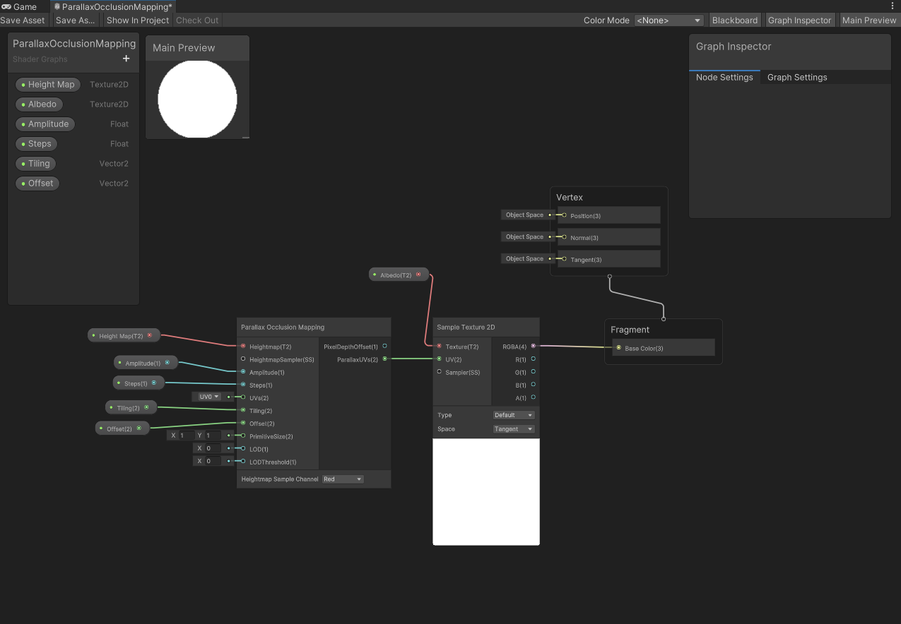

After countless hours using the Unity game engine, I decided to work with
Why Unreal Engine?
Unreal Engine, developed by Epic Games, is known for its cutting-edge graphics and its user-friendly interface. It
has powered some of the most visually stunning games in recent years. But what truly drew me to Unreal was its
unique system called "Blueprints."
Understanding Blueprints
For those unfamiliar with the term, Blueprints in Unreal Engine are a visual scripting system. They allow developers,
even those without a deep understanding of programming, to create game logic without writing a single line of code.
Here's why Blueprints stood out to me:
- Visual Interface: Instead of lines of code, you work with nodes and connections, making the process
more intuitive, especially for visual thinkers.
- Rapid Prototyping: With Blueprints, I could quickly test out ideas and see them in action. This was
invaluable as a beginner since I could immediately see the results of my efforts.
- Flexibility: While Blueprints are beginner-friendly, they are by no means limited in capability.
They offer a depth that can satisfy even seasoned developers.
Embarking on My Game Development Journey
Inspired by exploration games like "Abzu" and "Journey," I set out to create a game that would immerse players in a
beautiful, mysterious world. I envisioned vast underwater landscapes, reminiscent of "Abzu," and vast deserts with
hidden secrets, akin to "Journey."
The initial stages of development were enjoyable. Using various asset packs, I began
crafting my world. The landscapes started taking shape, and with the help of Blueprints, I was able to implement
basic game mechanics like character movement and interactions.
Challenges and Learnings
However, as with any new endeavor, challenges were bound to arise. While Blueprints made many tasks easier, there was
still a steep learning curve. Understanding the intricacies of the visual scripting system took time, and I often
found myself revisiting tutorials and forums.
Moreover, while I had a grand vision for my game, I realized the importance of setting realistic goals. Game
development is a vast field, and trying to create a game similar in scale to "Abzu" or "Journey" as a beginner was
ambitious, to say the least.
The Road Ahead
While I haven't yet completed my game, the journey so far has been incredibly rewarding. I've learned so much, not
just about Unreal Engine and Blueprints, but about the dedication, creativity, and resilience required in game
development.
To anyone considering diving into game development, I'd say, "Go for it!" The journey might be challenging, but with
tools like Unreal Engine and Blueprints, your vision can come to life in ways you never imagined.